Thesis documents
Ph.D Thesis and slides.
Masters Thesis and slides.
Selected Publications
| 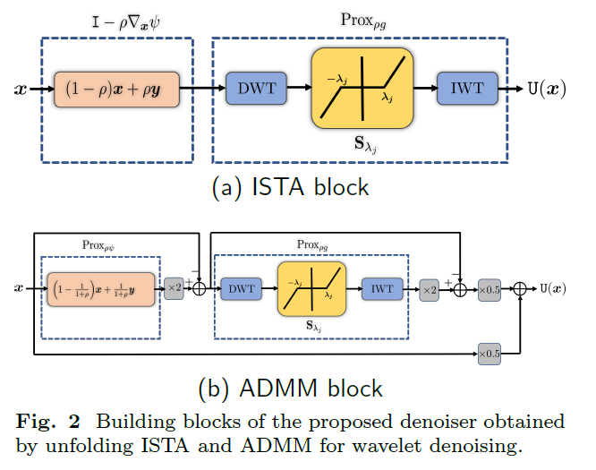 |
Averaged Deep Denoisers for Image Regularization |
| 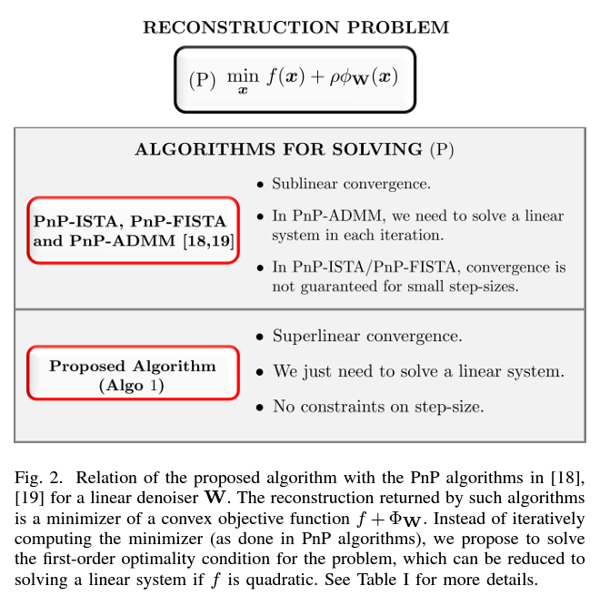 |
Plug-and-Play Regularization Using Linear Solvers |
| 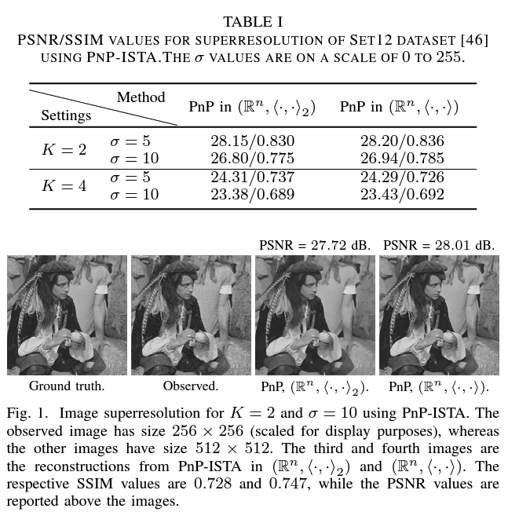 |
Fixed-point and objective convergence of plug-and-play algorithms |
| 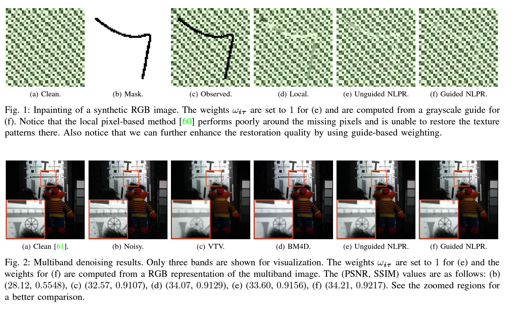 |
Guided Nonlocal Patch Regularization and Efficient Filtering-Based Inversion for Multiband Fusion |
| 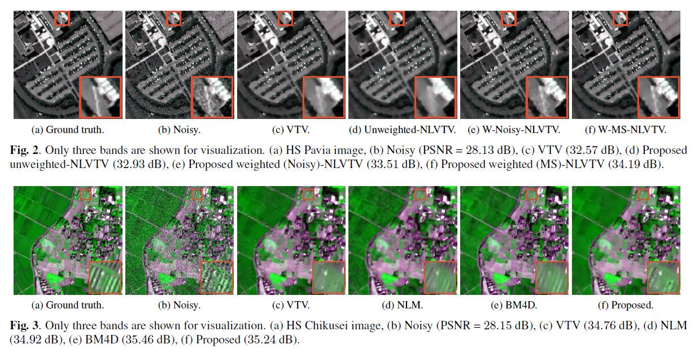 |
Hyperspectral Fusion Using Weighted Nonlocal Vector Total Variation |
| 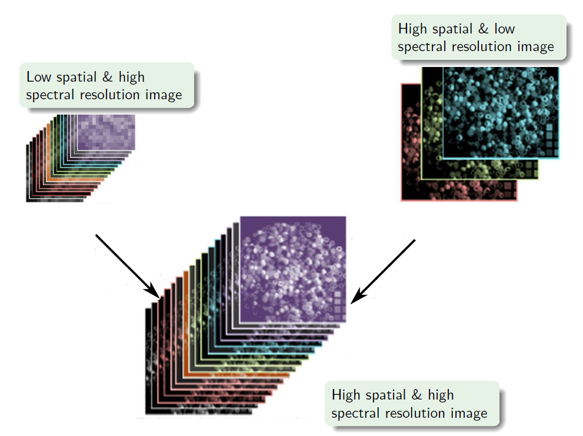 |
Plug-and-play registration and fusion |
| 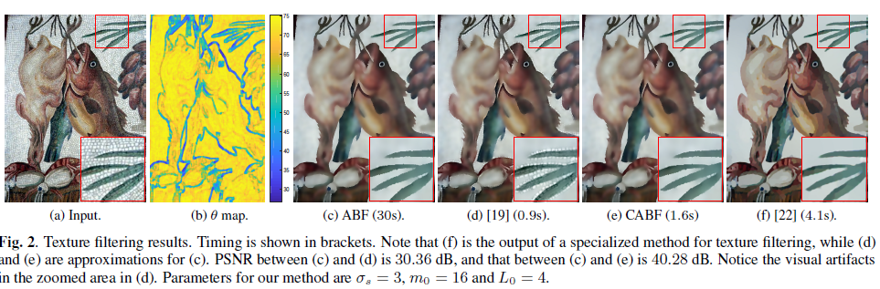 |
Compressive adaptive bilateral filtering |
| 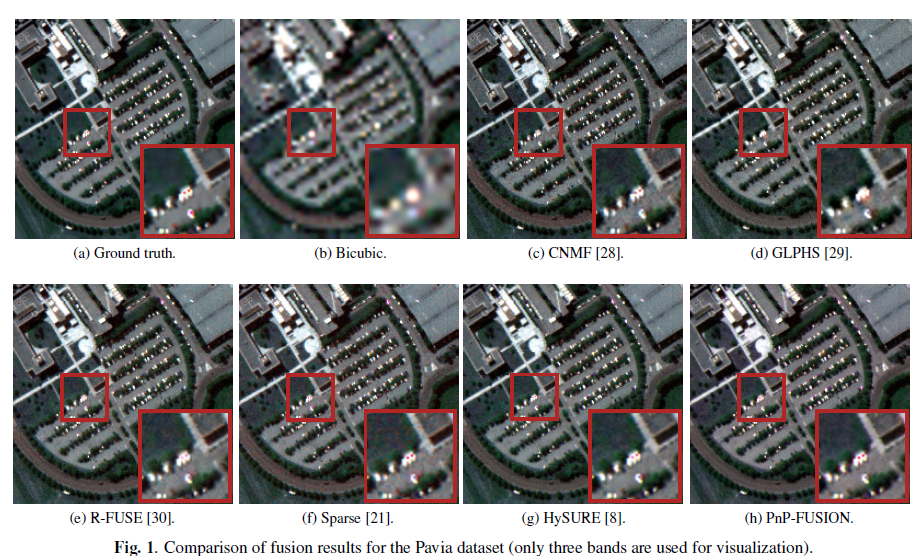 |
Hyperspectral image fusion using fast high-dimensional denoising |
| 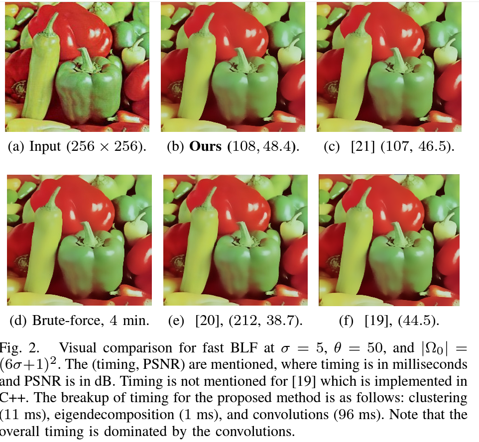 |
Fast High-Dimensional Kernel Filtering |
| 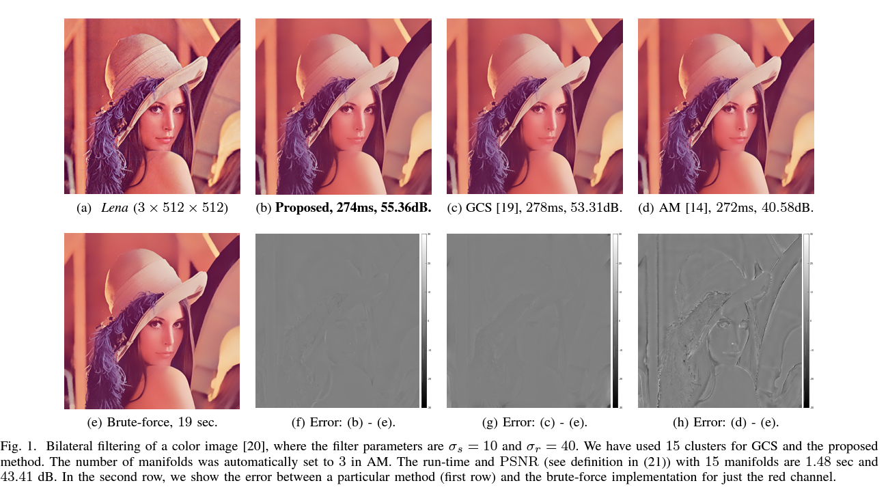 |
Fast high-dimensional bilateral and nonlocal means filtering |
| 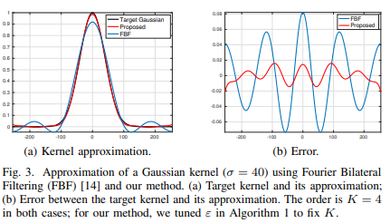 |
Optimized Fourier Bilateral Filtering |

|
A Concise Review of Fast Bilateral Filtering |
| 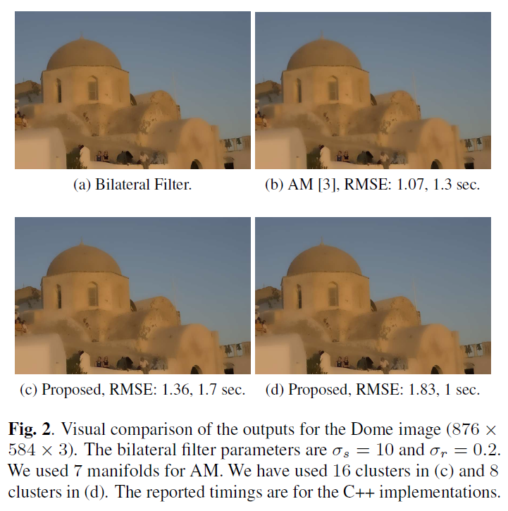 |
Fast high-dimensional filtering using clustering |
| 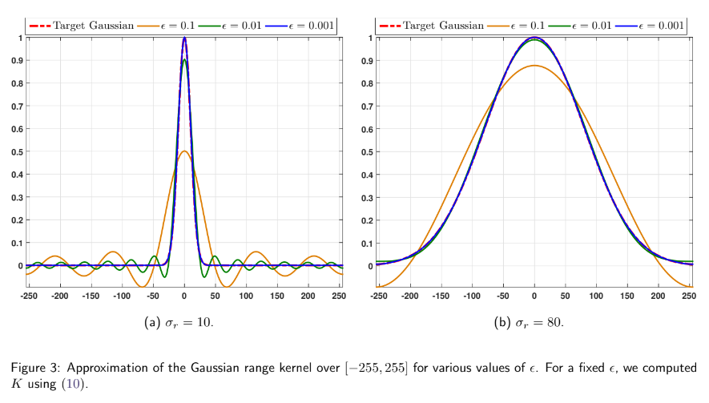 |
A fast approximation of the bilateral filter using the discrete Fourier transform |